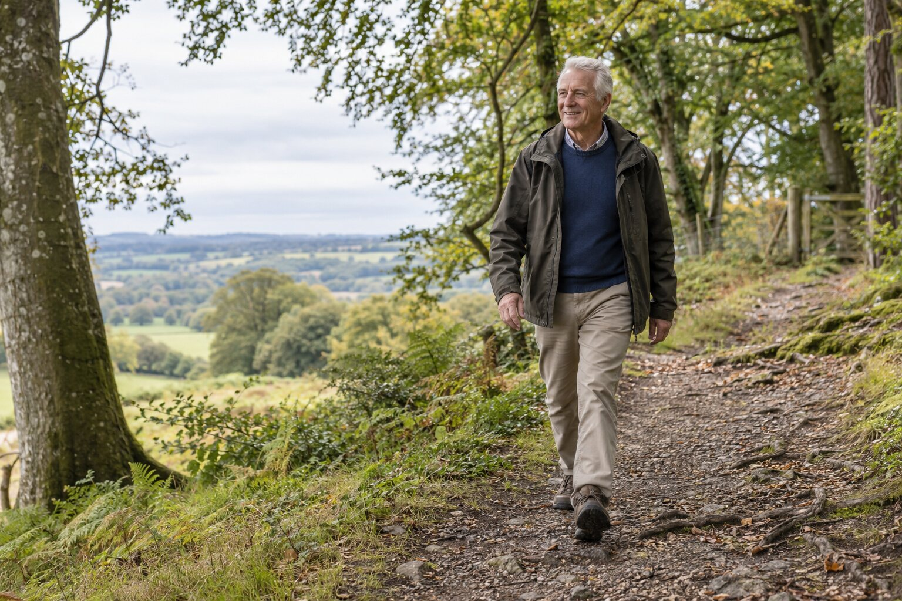
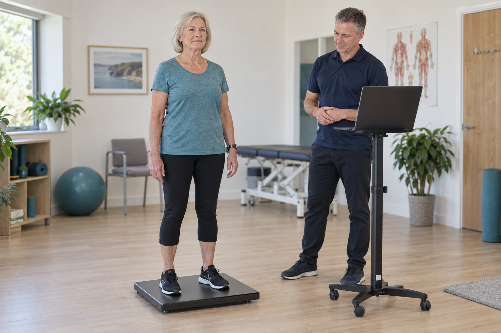

Start with you
We talk about what you’ve noticed, what you want to feel more confident doing, and any falls or near misses.
Physio Life Skills · Balance · Launching in 2027
Keep doing the things that matter.
Balance is something most of us barely think about—until it starts to feel a little less certain. It helps us walk outdoors, use stairs, turn, carry things, exercise and react when something unexpected happens.
Balance can be assessed, challenged and retrained.
Early access is planned for 2027. The assessment is being carefully developed and trialled before bookings open.

Balance helps keep life open
It’s about being able to keep doing things—and moving around without constantly thinking about where the next handhold might be.
The more confident we feel about our balance, the more likely we are to keep moving—and movement itself helps us stay stronger and more independent.
Getting a clearer picture
Balance is more complicated than it first appears. It depends on strength, vision, sensation from your feet and joints, your inner-ear balance system, coordination, reactions and the ability to adapt when the environment changes.
That means two people who both say, “My balance isn’t very good,” may actually have quite different things they need to work on.
A detailed Balance Assessment looks at how you stand, walk, turn and react, how your balance changes under different conditions, and how confidently you manage everyday movement. Where useful, technology can help us measure balance more precisely rather than relying only on observation.
The aim is to understand why you may be finding certain things difficult—and what we can do about it.

A small place to begin
Those everyday moments can give useful clues about the parts of balance that may need more attention.
Balance training doesn’t have to look dramatic. Small, appropriately challenging exercises practised regularly can make a real difference.
01Putting your trousers on while standing?
02Walking across uneven ground?
03Turning quickly or coming downstairs?
04Walking in the dark?
05Stepping around obstacles?
06Recovering when you trip or lose balance?
Start where you are
You do not have to be “bad enough” at balance. If you’ve started to notice a change, feel less confident than you used to, or simply want to protect your balance as you get older, that is a perfectly good place to begin.
Balance can change. And it can often change for the better.
Early access opening in 2027 · Final format and price to be confirmed
Join the priority list → Map, parking & directions →